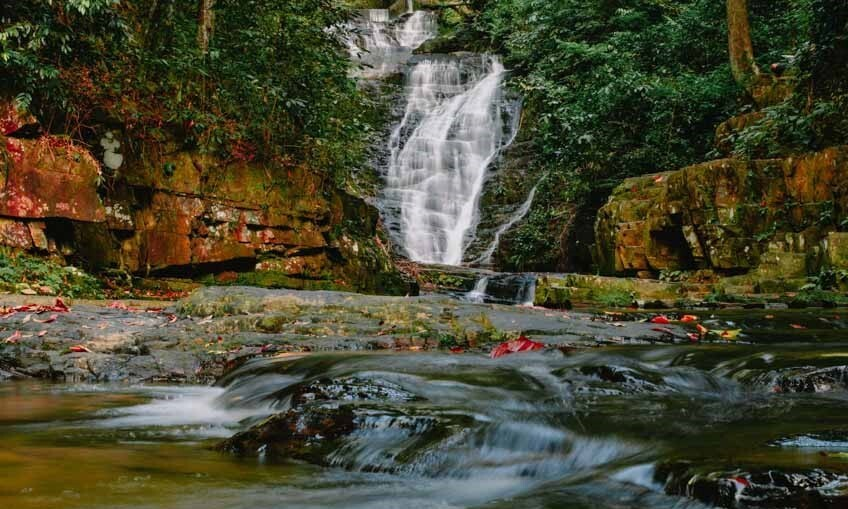
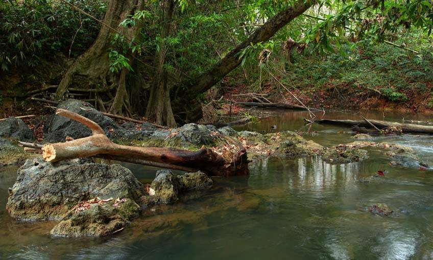

น้ำตกปลิว ที่เที่ยวธรรมชาติ นครศรีธรรมราช ปล่อยใจให้มันชิลไปกับธรรมชาติ

น้ำตกปลิว ตั้งอยู่ที่ ตำบลถ้ำใหญ่ อำเภอทุ่งสง จังหวัดนครศรีธรรมราช เป็นบริเวณของน้ำตกที่มีสภาพป่าเป็นป่าดงดิบชื้น มีฝนตกชุกเกือบตลอดทั้งปีเลยค่ะ ด้วยความที่สภาพป่าค่อนข้างสมบูรณ์มีพันธุ์ไม้หลากหลาย ทำให้น้ำตกสวยๆ แห่งนี้ มีน้ำไหลผ่านกันตลอดทั้งปี ซึ่งน้ำตกจะมีด้วยกันทั้งหมด 7 ชั้น แต่ละชั้นก็จะสวยแตกต่างกันไป โดยเฉพาะที่ชั้น 3 นั้น เราจะสามารถเห็นชั้นน้ำตกอื่นๆ ไหลลงเป็นสายอย่างสวยงามเลยค่ะ

ที่สำคัญยังสามารถมองเห็นวิวของหน้าผาอีกด้านหนึ่งได้ด้วย ส่วนน้ำตกของชั้นที่ 5 และชั้นที่ 7 นั้น ก็จะมีสายน้ำตกที่สวยงดงามอย่างมาก เป็นหนึ่งในที่เที่ยวกลางธรรมชาติ ที่เหมาะกับการไปช่วงหน้าฝนสุดๆ ค่ะ แต่อีกกิจกรรมหนึ่งที่อยากแนะนำให้ทำก็คือ การเดินศึกษาธรรมชาติ ค่ะ